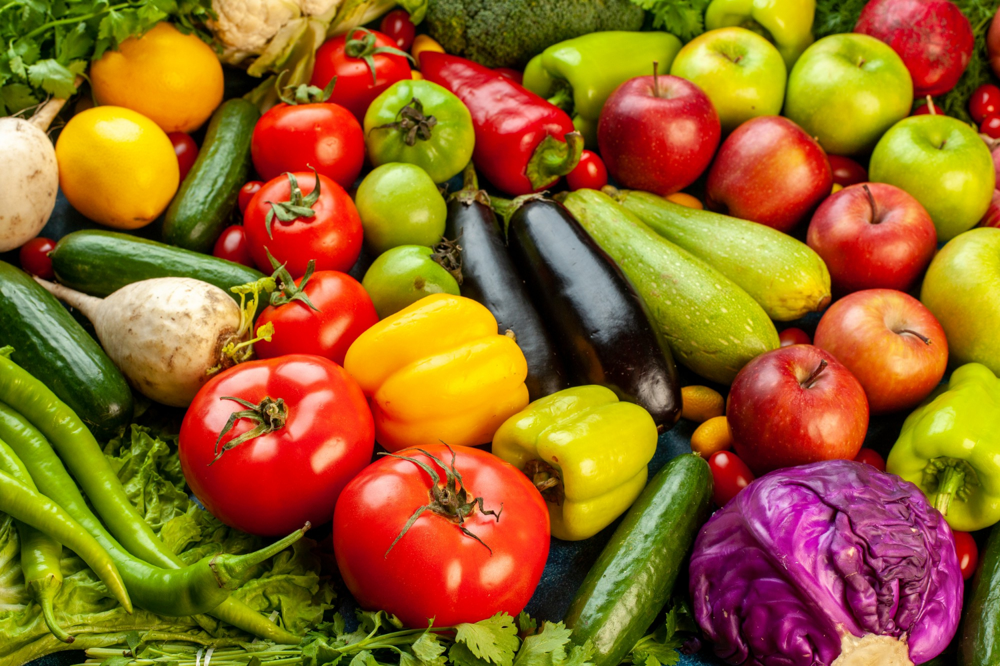

DETERIORAÇÃO DE ALIMENTOS
A deterioração de alimentos é um processo natural que ocorre devido a mudanças químicas, físicas e microbiológicas nos produtos alimentícios. Esse fenômeno resulta na perda de qualidade, segurança e valor nutritivo dos alimentos, tornando-os inadequados para consumo. Compreender os fatores que contribuem para a deterioração é essencial para desenvolver estratégias eficazes de preservação e prolongar a vida útil dos produtos.
Documentos de interesse:
{{ pdf.name }}